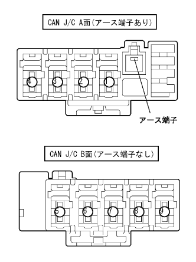
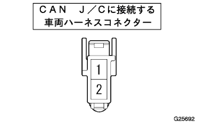
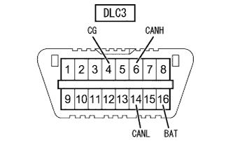
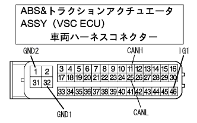
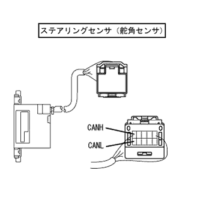
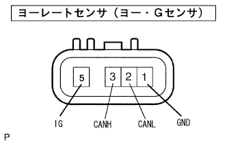
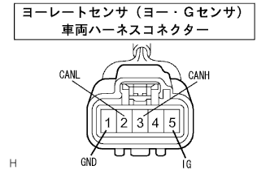
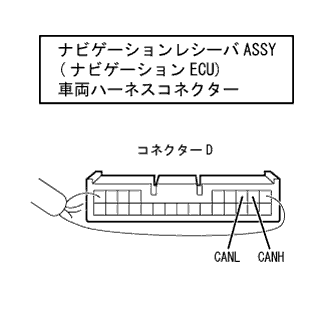

参照)
参照)CAN通信システム（ＶＳＣあり） ＥＣＵ端子配列 |
参照)|  |
端子配列
| CAN J/C (アース端子あり面) | 結線位置 |
|---|---|
| ナビゲーションレシーバASSY(ナビゲーションECU) | 1 |
| ABS&トラクションアクチュエータASSY(VSC ECU) | 2 |
| ステアリングセンサ(舵角センサ) | 3 |
| CAN J/C (アース端子なし面) | 結線位置 |
|---|---|
| DLC3 | 5 |
| ヨーレートセンサ(ヨー·Gセンサ) | 6 |
|  |
CAN J/Cに接続するコネクターの端子配列
| 端子番号 | 端子記号 |
|---|---|
| 1 | CANH |
| 2 | CANL |
|  |
端子配列
| 端子番号 | 端子記号 |
|---|---|
| 4 | CG |
| 6 | CANH |
| 14 | CANL |
| 16 | BAT |
DLC3点検
IG OFFにする。
SST(トヨタエレクトリカルテスター)を使用して、各端子の抵抗を点検する。
| 端子番号 | 項目 | 測定条件 | 基準 |
|---|---|---|---|
| 6(CANH)←→14(CANL) | 抵抗 | IG OFF | 54-69Ω |
| 6(CANH)←→16(BAT) | 抵抗 | IG OFF | 6kΩ以上 |
| 14(CANL)←→16(BAT) | 抵抗 | IG OFF | 6kΩ以上 |
| 6(CANH)←→4(CG) | 抵抗 | IG OFF | 200Ω以上 |
| 14(CANL)←→4(CG) | 抵抗 | IG OFF | 200Ω以上 |
端子配列
| 端子番号 | 端子記号 |
|---|---|
| 11 | CANH |
| 25 | CANL |
|  |
ABS&トラクションアクチュエータASSY(VSC ECU)車両ハーネスコネクター側点検
IG OFFにして、ABS&トラクションアクチュエータASSY(VSC ECU)のコネクターを切り離す。
SST(トヨタエレクトリカルテスター)を使用して、車両ハーネスコネクターの各端子の抵抗を点検する。
| 端子番号 | 項目 | 測定条件 | 基準 |
|---|---|---|---|
| 11(CANH)←→25(CANL) | 抵抗 | IG OFF | 108-132Ω |
| 11(CANH)←→GND | 抵抗 | IG OFF | 200Ω以上 |
| 25(CANL)←→GND | 抵抗 | IG OFF | 200Ω以上 |
| 11(CANH)←→+B | 抵抗 | IG OFF | 6kΩ以上 |
| 25(CANL)←→+B | 抵抗 | IG OFF | 6kΩ以上 |
|  |
端子配列
| 端子番号 | 端子記号 |
|---|---|
| 1 | CANH |
| 6 | CANL |
 |
ステアリングセンサ(舵角センサ)車両ハーネスコネクター側点検
IG OFFにして、ステアリングセンサ(舵角センサ)のコネクターを切り離す。
SST(トヨタエレクトリカルテスター)を使用して、車両ハーネスコネクターの各端子の抵抗を点検する。
| 端子番号 | 項目 | 測定条件 | 基準 |
|---|---|---|---|
| 1(CANH)←→6(CANL) | 抵抗 | IG OFF | 108-132Ω |
| 1(CANH)←→GND | 抵抗 | IG OFF | 200Ω以上 |
| 6(CANL)←→GND | 抵抗 | IG OFF | 200Ω以上 |
| 1(CANH)←→+B | 抵抗 | IG OFF | 6kΩ以上 |
| 6(CANL)←→+B | 抵抗 | IG OFF | 6kΩ以上 |
|  |
端子配列
| 端子番号 | 端子記号 |
|---|---|
| 3 | CANH |
| 2 | CANL |
|  |
ヨーレートセンサ(ヨー·Gセンサ)車両ハーネスコネクター側点検
IG OFFにして、ヨーレートセンサ(ヨー·Gセンサ)のコネクターを切り離す。
SST(トヨタエレクトリカルテスター)を使用して、各端子の抵抗を点検する。
| 端子番号 | 項目 | 測定条件 | 基準 |
|---|---|---|---|
| 3(CANH)←→2(CANL) | 抵抗 | IG OFF | 54-69Ω |
| 3(CANH)←→GND | 抵抗 | IG OFF | 200Ω以上 |
| 2(CANL)←→GND | 抵抗 | IG OFF | 200Ω以上 |
| 3(CANH)←→+B | 抵抗 | IG OFF | 6kΩ以上 |
| 2(CANL)←→+B | 抵抗 | IG OFF | 6kΩ以上 |
端子配列
| 端子番号 | 端子記号 |
|---|---|
| D2 | CANH |
| D3 | CANL |
|  |
ナビゲーションレシーバASSY(ナビゲーションECU)車両ハーネスコネクター側点検
IG OFFにして、ナビゲーションレシーバASSY(ナビゲーションECU)のコネクターDを切り離す。
SST(トヨタエレクトリカルテスター)を使用して、ナビゲーションレシーバASSY(ナビゲーションECU)車両ハーネスコネクターの各端子の抵抗を測定する。
| 端子番号 | 項目 | 測定条件 | 基準 |
|---|---|---|---|
| D2(CANH)←→D3(CANL) | 抵抗 | IG OFF | 54-69Ω |
| D2(CANH)←→GND | 抵抗 | IG OFF | 200Ω以上 |
| D3(CANL)←→GND | 抵抗 | IG OFF | 200Ω以上 |
| D2(CANH)←→+B | 抵抗 | IG OFF | 6kΩ以上 |
| D3(CANL)←→+B | 抵抗 | IG OFF | 6kΩ以上 |